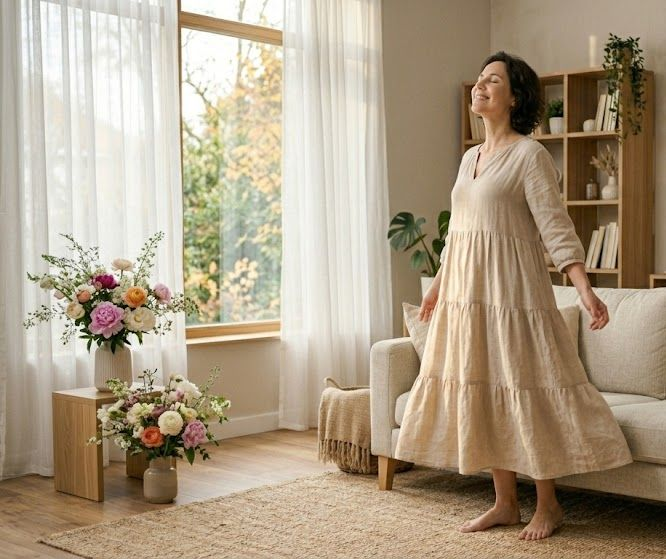
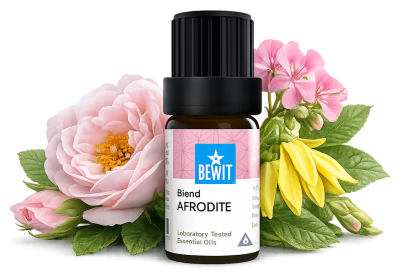

Ženská energie není o dokonalosti. Je o propojení, jemnosti a přijetí sebe takové, jaká jste. Esence mohou být vaším rituálem návratu k sobě — ke své hloubce, kráse a síle. Výsledky přicházejí s pravidelností — dopřejte si čas.

pro smyslnost, krásu a vnitřní sílu
Když se cítíte odpojeny od své ženskosti, ztratily jste kontakt s vlastním tělem nebo toužíte probudit svou přitažlivost a smyslnost. Ukáži vám, jak přirozeně posílit ženskou energii a cítit se ve své kůži.

Afrodita

Směs věnovaná ženské kráse, přitažlivosti a smyslnosti.
Probouzí ženskou energii, pomáhá cítit se krásná ve vlastním těle a připomíná vlastní hodnotu, kouzlo a sílu.
💧 Jak použít: zředěný v nosném oleji (např. jojobový) naneste na zápěstí, výstřih nebo přidejte 3–5 kapek do difuzéru — vhodná při rituálech, masážích nebo partnerských chvílích.
Zjistit více →💧 Jak použít: přidejte 3–5 kapek do difuzéru nebo zředěný v nosném oleji naneste na solar plexus a spodní břicho.
Chci se propojit💧 Jak použít: přidejte 3–5 kapek do difuzéru nebo zředěný v nosném oleji použijte při masáži — ideální pro partnerské chvíle.
Chci probouzet smysly💧 Masáž: naneste trochu nosného oleje na chodidla nebo celé tělo, přidejte 1 kapku na každé chodidlo a rozetřete. Koupel: 3–5 kapek smíchejte se smetanou nebo tekutým mýdlem a přidejte do vany.
Chci se uvolnitŽenská energie není o dokonalosti. Je o propojení, jemnosti a přijetí sebe takové, jaká jste. Esence mohou být vaším rituálem návratu k sobě — ke své hloubce, kráse a síle. Výsledky přicházejí s pravidelností — dopřejte si čas.
Mohlo by vás také zajímat:
🌿 Všechny esence, které na tomto webu doporučuji, jsou od BEWIT. Jako registrovaný zákazník můžete nakupovat se slevou až 50 % na vybrané produkty.
Registrace u BEWIT zdarma →